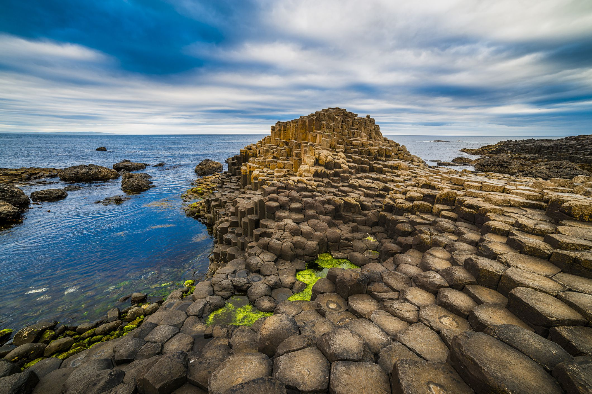

Giants Causeway

Location: England
Type: Result of an ancient volcanic fissure eruption
Area: 70ha
Fun Facts: According to a legend, the giant fionn mac cumhaill created the Giant's Causeway, as a causeway to Scotland.
Giant Causeway, England